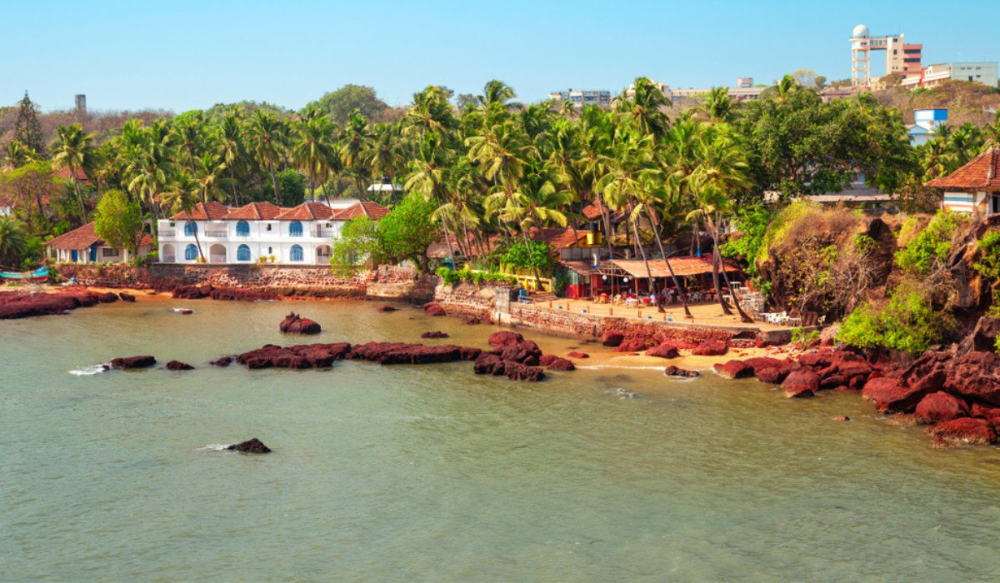
Panaji: Goa's Charming Capital
Panaji, locally known as Panjim, is a cozy riverside city and the capital of Goa. Nestled along the scenic Mandovi River, it blends Portuguese colonial charm with laid-back Goan vibes.
Fun Fact:
~Panaji was once a sleepy village but became the capital of Goa after the Portuguese left Old Goa due to a plague in the 18th century!
Things to Explore in Panaji:
-
Fontainhas (Latin Quarter):
Walk through narrow streets with colorful Portuguese houses, art galleries, and quaint cafés.
-
Dona Paula Viewpoint:
Enjoy panoramic views of the Arabian Sea and the Zuari River.
-
Immaculate Conception Church:
A stunning white church with a grand staircase and panoramic views.
-
Miramar Beach:
A peaceful city beach perfect for evening walks.
-
Goa State Museum & Kala Academy:
Dive into Goan history, art, and culture.
-
Mandovi River Cruises & Casinos:
Try a sunset river cruise or experience Goa’s floating casinos for some fun!
Why Visit Panaji?
!Because it’s the perfect mix of culture, calm, and coastal breeze – ideal for travelers who want more than just beaches.
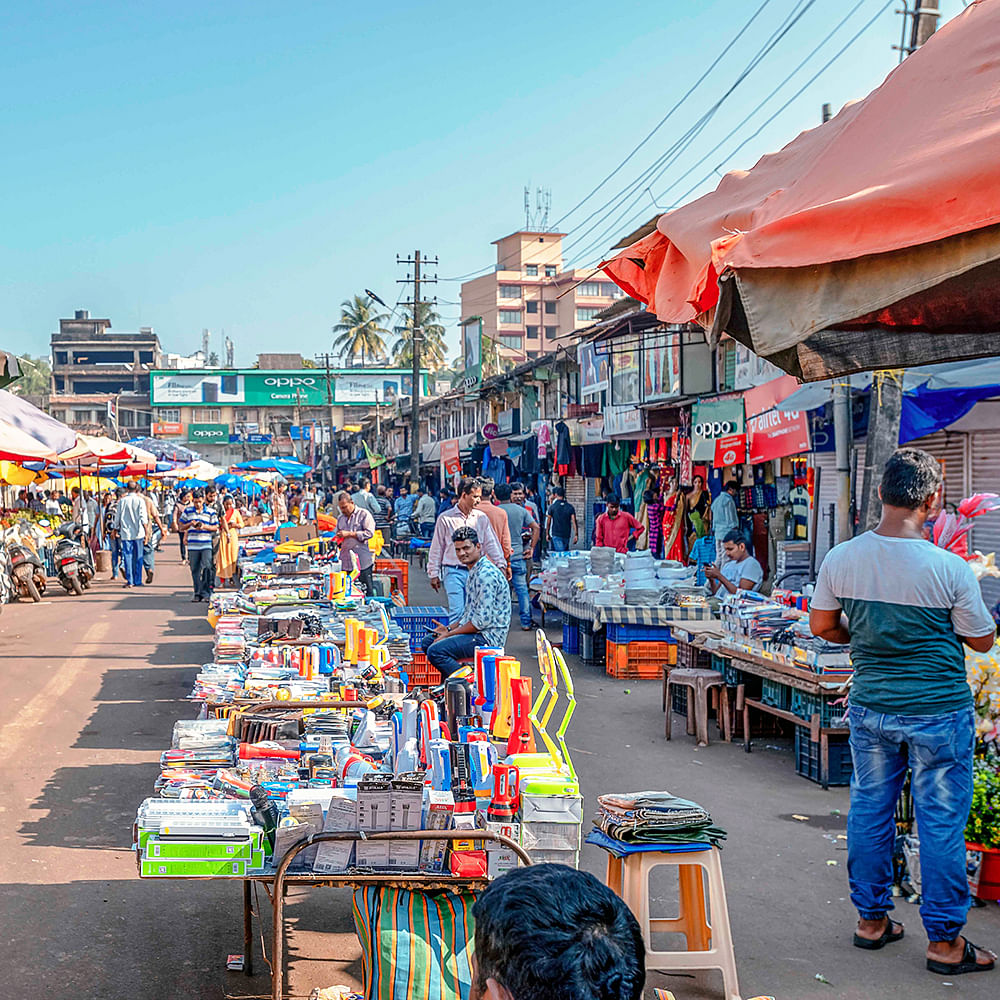
Mapusa: The Heart of North Goa
Mapusa is a bustling town in North Goa, known for its vibrant markets and rich cultural heritage. It’s the perfect base to explore the nearby beaches and attractions.
Fun Fact:
~Mapusa is famous for its Friday Market, where you can find everything from fresh produce to traditional handicrafts!
Things to Explore in Mapusa:
-
Mapusa Market:
Experience the lively atmosphere and shop for local spices, fruits, and souvenirs.
-
Ancestral Goa Museum:
A unique open-air museum showcasing Goan culture and traditions.
-
Chapora Fort:
Visit this historic fort for stunning views of the Chapora River and Vagator Beach.
-
St. Cajetan Church:
A beautiful baroque-style church with intricate architecture.
-
Mandrem Beach:
A serene beach known for its golden sands and tranquil atmosphere.
Why Visit Mapusa?
!Because it’s a vibrant town that offers a glimpse into Goan life beyond the beaches, with plenty of local charm and culture to explore.
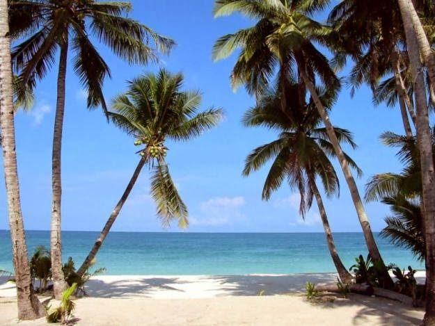
Baga: The Party Hub of Goa
Baga is a lively beach destination in North Goa, famous for its vibrant nightlife, water sports, and beach shacks. It’s the perfect spot for those looking to party and enjoy the sun.
Fun Fact:
~Baga Beach is known for its electrifying nightlife, with beach parties that last until dawn!
Things to Explore in Baga:
-
Baga Beach:
Relax on the sandy shores, try water sports, or enjoy a beachside meal.
-
Tito’s Lane:
A famous street lined with clubs, bars, and restaurants for a night out.
-
Anjuna Flea Market:
Shop for unique souvenirs, clothes, and handicrafts every Wednesday.
-
Calangute Beach:
Visit the nearby Calangute Beach for more sun and fun.
-
Dolphin Spotting Tours:
Take a boat ride to see playful dolphins in their natural habitat.
Why Visit Baga?
!Because it’s the ultimate destination for beach lovers and party enthusiasts looking to soak up the sun and dance the night away!
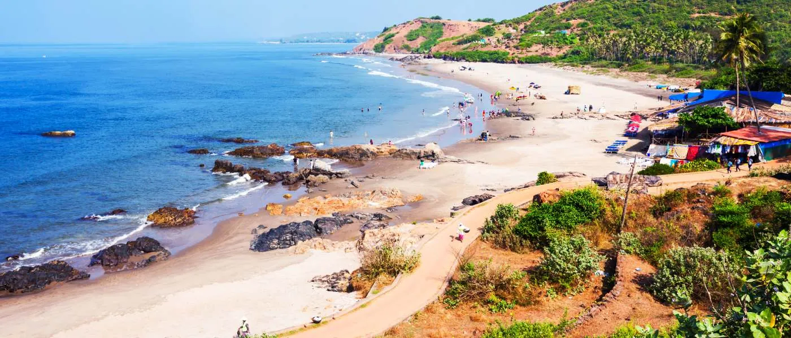
Anjuna: The Bohemian Beach Paradise
Anjuna is a famous beach destination in North Goa, known for its bohemian vibe, vibrant markets, and stunning sunsets. It’s a favorite among backpackers and free spirits.
Fun Fact:
~Anjuna Beach was once a hippie haven in the 1960s and still retains its laid-back, alternative culture!
Things to Explore in Anjuna:
-
Anjuna Beach:
Relax on the beach, try water sports, or enjoy a sunset at one of the beach shacks.
-
Anjuna Flea Market:
Shop for unique handicrafts, clothes, and souvenirs every Wednesday.
-
Chapora Fort:
Visit this historic fort for panoramic views of the coastline.
-
Anjuna Night Market:
Experience the vibrant night market with food stalls, live music, and shopping.
-
Arambol Beach:
A nearby beach known for its relaxed atmosphere and live music scene.
Why Visit Anjuna?
!Because it’s a bohemian paradise that offers a unique blend of culture, relaxation, and adventure – perfect for those seeking an alternative Goan experience!
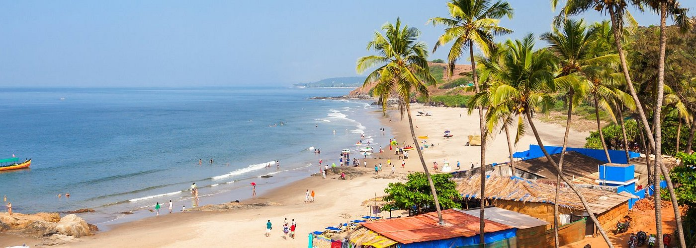
Candolim: The Serene Beach Escape
Candolim is a peaceful beach destination in North Goa, known for its golden sands, water sports, and relaxed atmosphere. It’s ideal for families and couples looking for a quieter beach experience.
Fun Fact:
~Candolim Beach is less crowded than its neighboring beaches, making it perfect for a serene getaway!
Things to Explore in Candolim:
-
Candolim Beach:
Relax on the beach, try water sports, or enjoy a meal at one of the beach shacks.
-
Fort Aguada:
Visit this historic fort with stunning views of the Arabian Sea.
-
Sinquerim Beach:
A quieter beach perfect for swimming and sunbathing.
-
Dolphin Spotting Tours:
Take a boat ride to see dolphins in their natural habitat.
-
Candolim Market:
Shop for local handicrafts, clothes, and souvenirs.
Why Visit Candolim?
!Because it’s a serene beach escape that offers relaxation, adventure, and beautiful sunsets – perfect for families and couples seeking tranquility!
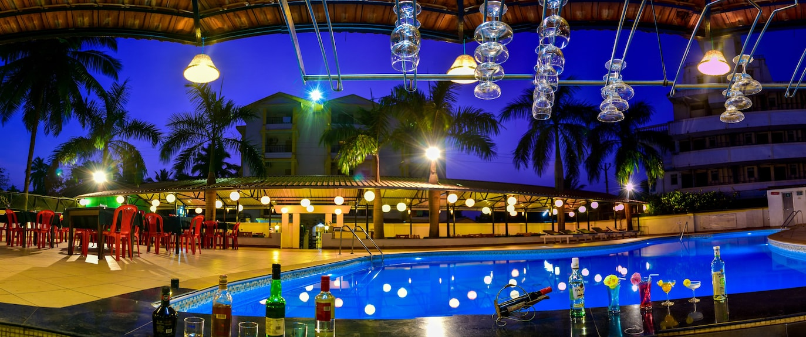
Colva: The Family-Friendly Beach
Colva is a popular beach destination in South Goa, known for its soft white sands, calm waters, and family-friendly atmosphere. It’s perfect for a relaxing beach holiday with loved ones.
Fun Fact:
~Colva Beach is one of the longest beaches in Goa, stretching over 2.4 kilometers!
Things to Explore in Colva:
-
Colva Beach:
Relax on the soft sands, swim in the calm waters, or enjoy water sports.
-
Benaulim Beach:
A quieter beach nearby, perfect for a peaceful day by the sea.
-
Colva Church:
Visit the beautiful Our Lady of Mercy Church with its stunning architecture.
-
Dolphin Spotting Tours:
Take a boat ride to see dolphins in their natural habitat.
-
Colva Market:
Shop for local handicrafts, clothes, and souvenirs.
Why Visit Colva?
!Because it’s a family-friendly beach that offers relaxation, adventure, and beautiful sunsets – perfect for a memorable beach holiday with loved ones!
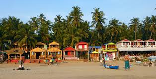
Palolem: The Hidden Gem of Goa
Palolem is a stunning beach destination in South Goa, known for its crescent-shaped beach, vibrant nightlife, and laid-back atmosphere. It’s perfect for those looking for a hidden gem away from the crowds.
Fun Fact:
~Palolem Beach is famous for its picturesque beauty and is often considered one of the most beautiful beaches in India!
Things to Explore in Palolem:
-
Palolem Beach:
Relax on the soft sands, swim in the calm waters, or try kayaking.
-
Butterfly Beach:
A secluded beach accessible by boat, known for its natural beauty.
-
Palolem Night Market:
Experience the vibrant night market with food stalls, live music, and shopping.
-
Dolphin Spotting Tours:
Take a boat ride to see dolphins in their natural habitat.
-
Agonda Beach:
A nearby beach known for its tranquility and scenic beauty.
Why Visit Palolem?
!Because it’s a hidden gem that offers stunning natural beauty, adventure, and relaxation – perfect for those seeking a unique Goan experience!
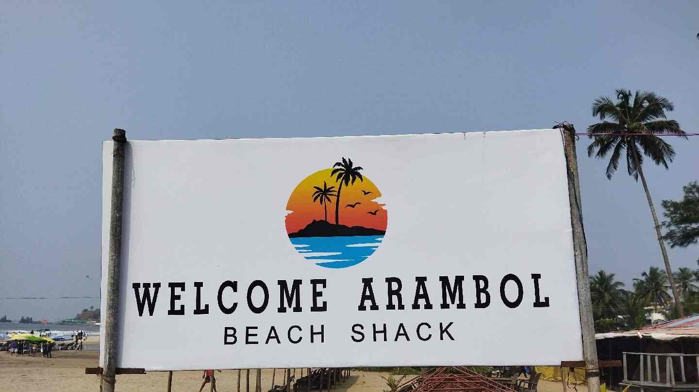
Arambol: The Bohemian Beach Retreat
Arambol is a bohemian beach destination in North Goa, known for its relaxed atmosphere, live music scene, and vibrant markets. It’s a favorite among backpackers and free spirits.
Fun Fact:
~Arambol Beach is famous for its drum circles and live music performances, creating a unique and lively atmosphere!
Things to Explore in Arambol:
-
Arambol Beach:
Relax on the beach, swim in the sea, or enjoy a sunset at one of the beach shacks.
-
Sweet Water Lake:
A freshwater lake surrounded by lush greenery, perfect for a refreshing dip.
-
Arambol Night Market:
Experience the vibrant night market with food stalls, live music, and shopping.
-
Live Music Performances:
Enjoy live music performances at various venues along the beach.
-
Mandrem Beach:
A nearby beach known for its tranquility and scenic beauty.
Why Visit Arambol?
!Because it’s a bohemian retreat that offers relaxation, adventure, and a unique cultural experience – perfect for those seeking an alternative Goan vibe!
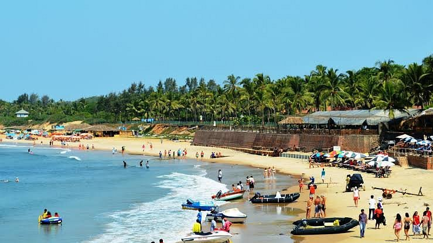
Morjim: The Serene Beach Escape
Morjim is a peaceful beach destination in North Goa, known for its golden sands, serene atmosphere, and olive ridley turtle nesting sites. It’s ideal for those looking for a quieter beach experience.
Fun Fact:
~Morjim Beach is known as "Little Russia" due to its large Russian expatriate community!
Things to Explore in Morjim:
-
Morjim Beach:
Relax on the beach, swim in the calm waters, or enjoy a meal at one of the beach shacks.
-
Olive Ridley Turtle Nesting Sites:
Visit during nesting season to witness these endangered turtles laying eggs.
-
Chapora River:
Take a boat ride along the Chapora River for scenic views and birdwatching.
-
Ashwem Beach:
A nearby beach known for its tranquility and scenic beauty.
-
Mandrem Beach:
A quieter beach perfect for swimming and sunbathing.
Why Visit Morjim?
!Because it’s a serene beach escape that offers relaxation, adventure, and beautiful sunsets – perfect for those seeking tranquility away from the crowds!
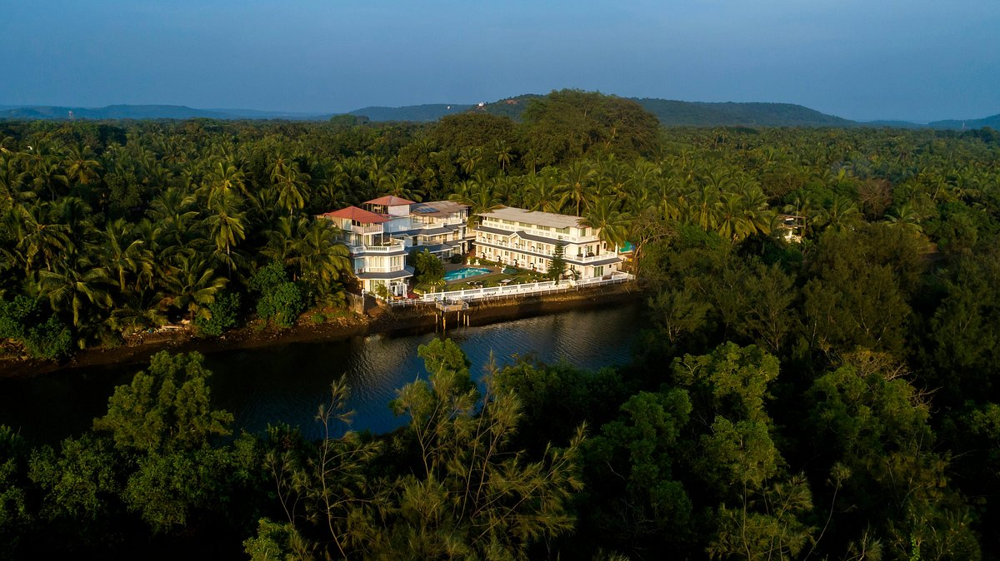
Siolim: The Quaint Village Experience
Siolim is a charming village in North Goa, known for its lush greenery, traditional Goan houses, and serene atmosphere. It’s perfect for those looking to experience the local culture and lifestyle.
Fun Fact:
~Siolim is famous for its beautiful churches and temples, showcasing the rich cultural heritage of Goa!
Things to Explore in Siolim:
-
Siolim Church:
Visit the beautiful St. Anthony's Church with its stunning architecture.
-
Chapora River:
Take a boat ride along the river for scenic views and birdwatching.
-
Siolim Market:
Shop for local produce, handicrafts, and souvenirs.
-
Morjim Beach:
A nearby beach known for its tranquility and scenic beauty.
-
Mandrem Beach:
A quieter beach perfect for swimming and sunbathing.
Why Visit Siolim?
!Because it’s a quaint village that offers a glimpse into traditional Goan life, with plenty of local charm and culture to explore!
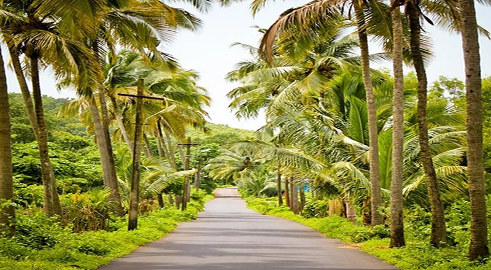
Assagao: The Artistic Village
Assagao is a picturesque village in North Goa, known for its vibrant art scene, lush greenery, and charming architecture. It’s perfect for those looking to explore the artistic side of Goa.
Fun Fact:
~Assagao is home to many artists and musicians, making it a hub for creativity and culture!
Things to Explore in Assagao:
-
Art Galleries:
Visit local art galleries showcasing the works of Goan artists.
-
Assagao Market:
Shop for local produce, handicrafts, and souvenirs.
-
Chapora Fort:
Visit this historic fort for panoramic views of the coastline.
-
Ancestral Goan Houses:
Explore the beautiful Portuguese-style houses that line the streets.
-
Mandrem Beach:
A nearby beach known for its tranquility and scenic beauty.
Why Visit Assagao?
!Because it’s an artistic village that offers a unique blend of culture, relaxation, and adventure – perfect for those seeking a creative Goan experience!
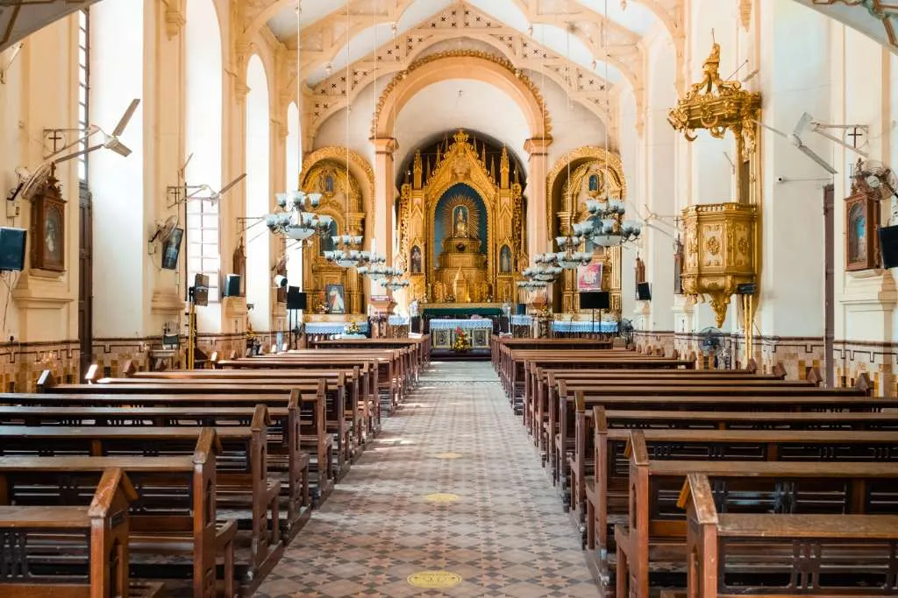
Saligao: The Serene Village Retreat
Saligao is a serene village in North Goa, known for its lush greenery, traditional Goan houses, and peaceful atmosphere. It’s perfect for those looking to escape the hustle and bustle of city life.
Fun Fact:
~Saligao is famous for its beautiful churches and temples, showcasing the rich cultural heritage of Goa!
Things to Explore in Saligao:
-
Saligao Church:
Visit the beautiful St. Anne's Church with its stunning architecture.
-
Saligao Market:
Shop for local produce, handicrafts, and souvenirs.
-
Chapora River:
Take a boat ride along the river for scenic views and birdwatching.
-
Mandrem Beach:
A nearby beach known for its tranquility and scenic beauty.
-
Morjim Beach:
A quieter beach perfect for swimming and sunbathing.
Why Visit Saligao?
!Because it’s a serene village retreat that offers relaxation, adventure, and beautiful sunsets – perfect for those seeking tranquility away from the crowds!